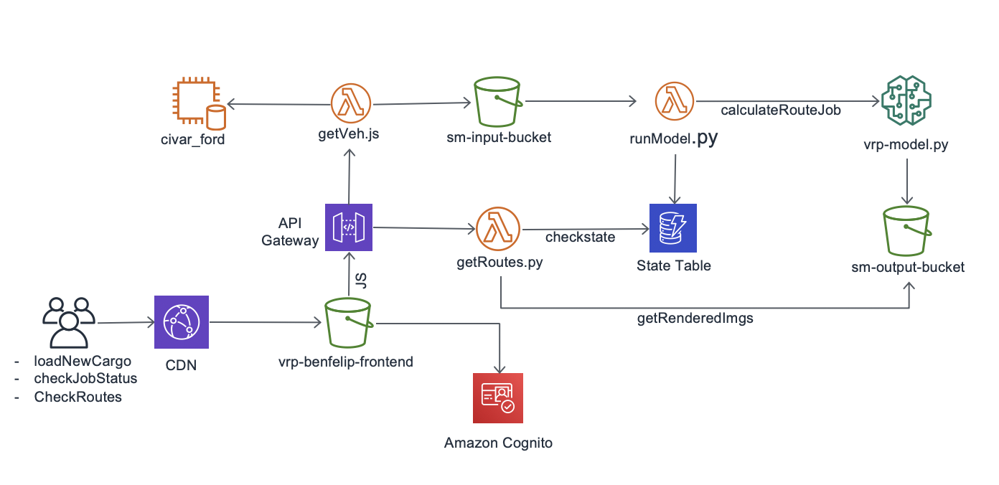

This a Proof of Concept (POC) frontend to allow users to load data from the legacy system (MS SQL 2012 Based). The idea is to add Machine Learning capabilities to an old application in a complete serverless way.
Based on that list of vehicles that have to be delivered, this data is fed into sm-input-bucket where all the process start. Having that data in that bucket, runModel.py function is triggered. This function has two main objectives : Update the state table on Dynamo DB with vehicles involved in the Sage Maker Job and trigger it. Send that data to a S3 Bucket to allow a Amazon Sage Maker to calculate the best delivery route using Machine Learning. Results can be seen here.
Once Machine Learning has finished running, the user can see a rendered image with the best-rewarded route.
This can be best depicted in this diagram : 